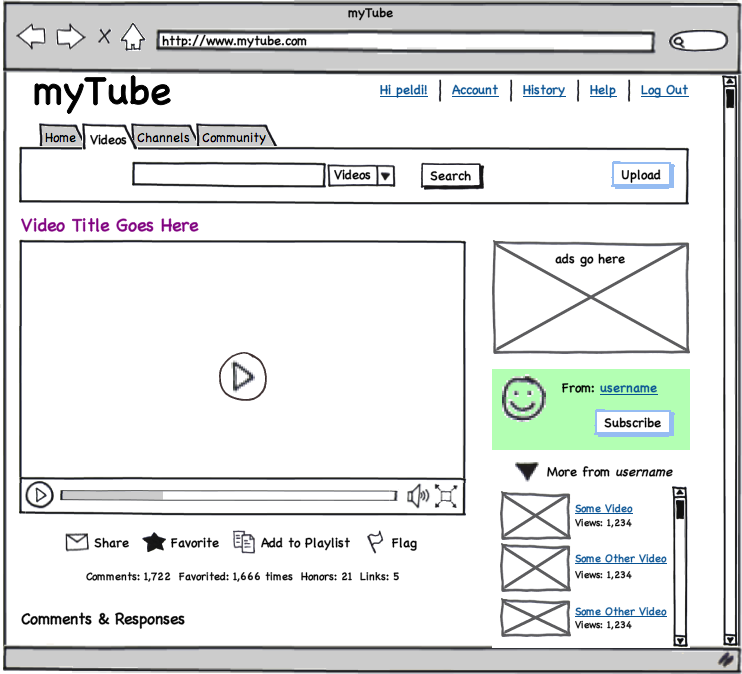
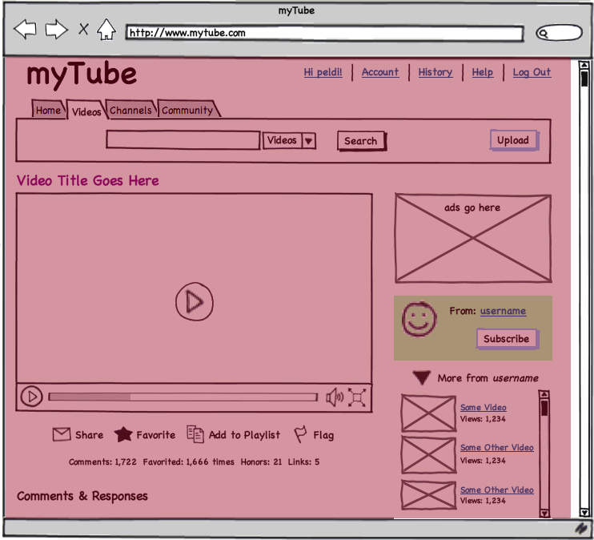
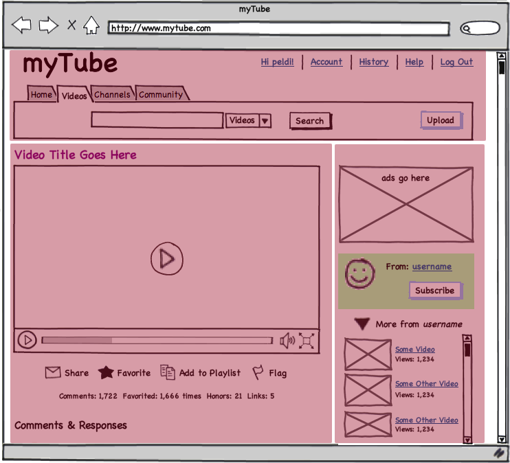
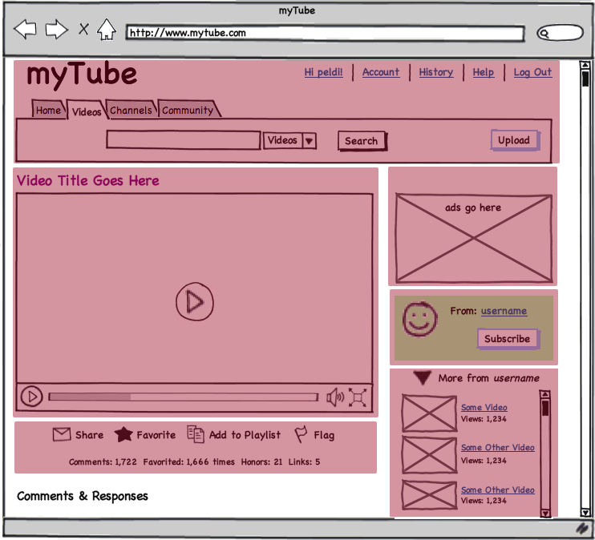
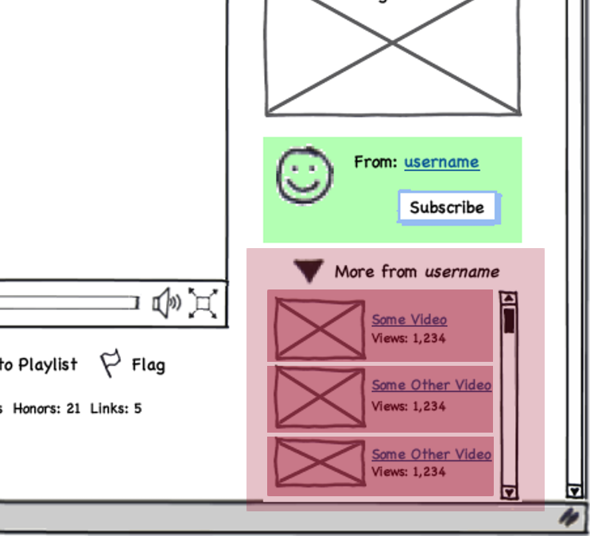

Section #5 - Views
Bocoup Backbone.js Training
What can trigger a view update?
A User Action
A Data Update from the Server
What can trigger a view update? - A User Action
Imagine that clicking on the "Clear" button clears the user list we just saw.
User List:
- Alice
What can trigger a view update? - Incoming Server Data
Assume the server had some data. It looks like this:
[{ id : 1, name : "Joe"},{ id : 2, name : "Mike"}]User List:
- Alice
Why are those not good ways to do that?
A few things:
- "Userlist" not treated as component.
- Loading/Clearing logic separate in code.
- Returning data not reusable.
- Multiple actions would all be in same callback.
Creating
The definition of a View.
var View = Backbone.View.extend({
});The initialization of a View.
var view = new View();What's a view?
Let's take this Balsamiq mockup of a YouTube like product:

What's a view?

What's a view?

What's a view?

What's a view?

What's a view?
Thinking about the Related Video List we would have:
Video module Views property: Video.Views RelatedVideoList View for the whole list, and/or RelatedVideoListItem View for each item What's a View?
Based on these views, we might need the following model and collection:
-
Video.RelatedVideo- A model that contains a related video to the currently viewed video.
An API call might look like:
http://mytube.com/video/4/related/6 -
Video.RelatedVideos- A collection that contains related videos to a specific video.
An API call might look like:
http://mytube.com/video/4/related
Element
Every Backbone.View by default has an associated DOM Element. This is typically created by Backbone automatically during initialization.
var myView = new Backbone.View();
console.log(myView.el); // just dom element
console.log(myView.$el); // jQuery/zepto wrapped.You can attach to an existing view like so:
var myView = new Backbone.View({
el : '#selector'
});Element
Don't do this though:
var myView = new Backbone.View({
el : $('#selector')
});The jQuery selector will be evaluated before the View is created, and might not be available unless you're in a DOM Ready state.
New element vs Existing element
You may want to use an existing DOM element if the answer is yes to any of the following questions:
- Is this an element I'm only going to paint once?
- Is this an element that contains other elements?
- Is this an element I am going to be updating a lot?
- Is it organizational and not really tied to data?
You may want to create new DOM elements if the answer is yes to any of the following questions:
- Is it tied to a model/collection?
- Is this an element that's going to be painted in many places?
- Is this an element that's a part of a list?
Note that these are not rules, but things to think about.
Passing Data
How does one bind a model or a collection instance to a view?
In one of the following ways:
var listItem = new MyListItem({ name : 'someName' });
var list = new MyList([listItem]);
var listView = new MyListView({
collection : list
});
var listItemView = new MyListItemView({
model : listItem
});DOM Events
Attaching a DOM event to your View is accomplished by specifying an event and/or selector plus a callback inside the events object.
var MyView = Backbone.View.extend({
events: {
"click": "handleClick",
"hover .some-selector": "handleHover"
}
});The callback has a single argument which is the event passed from jQuery. The this context is set to the View.
var MyView = Backbone.View.extend({
handleClick: function(evt) {
}
});Where should events be defined?
If your event is modifying the model or collection, define it on the view that corresponds to the model or collection.
If your event is NOT modifying the model/collection,
define it on the highest level container you can and catch the
event.target.
Render method
The default render method is just passing through a reference
to the context like so:
render: function() {
return this;
}When you overwrite it to do your rendering work, be sure to
return this as well.
A common pattern is to render views inside of views that own them:
var ListView = Backbone.View.extend({
render : function() {
this.collection.each(function(item) {
this.$el.append(new ListItemView({
model : item
}));
});
}
});Render
User List:
Render
User List:
Templates
There are two parts of templating on the client side. Fetching the template and then rendering.
Defining a template is conventionally done with a template property.
Backbone.View.extend({
template: _.template("<%= var %>")
});Then rendered by the View into its internal element.
Backbone.View.extend({
render: function() {
var markup = this.template(this.model.toJSON());
this.$el.html(markup);
return this;
}
});Where Do Templates Come from?
1. Just strings:
Backbone.View.extend({
template: _.template("<%= var %>")
})2. Script tags:
<script type="text/template" id="viewtemplate">
<li>My name is <%= name %></li>
</script>
Backbone.View.extend({
template: _.template($('#view_template').html())
})
Where Do Templates Come from?
3. From the server/precompiled:
Store them as individual files on your server in a specific directory:
app
modules
photo.js
templates
photo
show.html
list.htmlHere's what a template might look like:
<div class="detail">
<img src="<%= photo.get("data") %>">
<div class="delete">
<button class="btn">delete photo</button>
</div>
</div>Where Do Templates Come from?
When defining a view, give it the template path:
Backbone.View.extend({
template : "templates/photo/show"
});On initialization check if template is cached in a global object, if not fetch it from server:
path = path + ".html";
if (!JST[path]) {
$.ajax({ url: app.root + path, async: false }).then(function(contents) {
JST[path] = _.template(contents);
});
}
return JST[path];Backbone Boilerplate does this for you, but it's a neat trick.
Grunt.js supports building all templates into a single namespace file, so that they are precompiled and available in production.
Auto Updating
Useful when dealing with asynchronous data and to keep the UI synchronized.
Whenever the View's model changes, re-render the View.
initialize: function() {
this.listenTo(this.model, "change", this.render);
}Auto Updating
If you don't want to re-render every time, define an update method that will only update required data:
var MyView = Backbone.View.extend({
initialize: function() {
this.listenTo(this.model, "change", this.update);
},
update : function() {
this.$el.find('.name').html(this.model.get('name'));
}
});Cleaning
Whenever you assign an interval, timeout, event, etc. inside your View you should take care to clean up once it is removed.
One method to clean is to patch the remove method.
remove: function() {
// Add cleanup code here
// example: unbind events!
this.model.unbind("change:name", this.update);
// always call default remove method in the end.
return Backbone.View.prototype.remove.apply(this, arguments);
}When you call view.remove() it will unbind all events bound using listenTo.